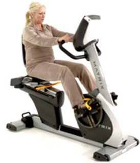
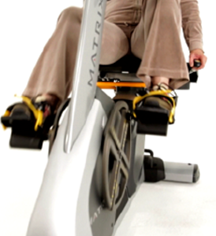

THE TECHNOLOGY


How It Works
The ROM³ Rehab System involves a patented adjustable pedal system (X-Y Technology™) which enables patients with any lower extremity Range of Motion to immediately begin movement within a limited Range of Motion of the affected joint or limb.
Patients, including those with extremely limited ROM, can comfortably begin at the lowest gradients of movement—with passive motion, in a miniscule Range of Motion. Within 7-10 minutes, therapists observe that the affected leg relaxes and begins comfortable exertion, reaching assisted-active motion, and causing:
- Improved blood flow and lymphatic flow
- Reduced swelling
- Reduced pain
A key dynamic of the ROM³ System is that a patient uses his/her “good leg” to push, stretch, and rehabilitate his/her “bad leg.” A subtle ingenuity is that the patient now plays both sides of the “chess game”—that is to say, the patient becomes a co-therapist by supervising his “good leg” to support and stretch his own “bad leg.” Thus the patient unconsciously adopts the viewpoint of a therapist, rather than that of a protester, and so better drives—and speeds—his/her own recovery. The difference is subtle, but the results are remarkable.
As time goes on, patients can gradually increase to active motions, and adjust the device for greater and greater Range of Motion.
The ROM³ System’s universal accessibility and ease of use enables both earlier movement and more movement, allowing the patient’s natural recovery mechanisms to flourish which aids the recovery and healing process.
Rehabilitating Sit-to-Stand Motions
The ROM³ System can also be used to rehabilitate Sit-to-Stand motions, which are so vital to functional independence and the activities of daily living. (read more) [link to Sit-to-Stand page]
Rehabilitating More Advanced Gaits
The versatile ROM³ System can also be adjusted to rehabilitate other Advanced Gaits, which help patients with everyday actions, such as climbing stairs, walking on uneven surfaces or grass, or taking a diagonal step, further increasing patients’ functional independence.
To accomplish this, the ROM³'s pedal positions are adjusted offset such that when one pedal is up, the other is forward (90° offset), known as "Leading Leg Technology™".
These motions are different from walking in straight lines on level, even surfaces, and require a different sequence of muscle recruitment. In these types of everyday motions, patients usually lead with their “good leg” with the affected leg trailing.
Advanced Gait Therapy with the ROM³ System rehabilitates these more advanced motions necessary for activities of daily living, further improving patient mobility, functionality, and independence.